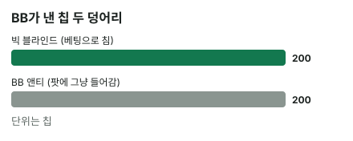

안녕하세요. B01에서 블라인드는 "돌아가며 먼저 넣어 두는 칩"이라고 했죠.
오늘은 블라인드와 함께 나오는 앤티, 그리고 토너먼트에서 쓰는 BB 앤티를 정리해요. 이름만 외우면 헷갈리지만, "이 칩이 베팅으로 치는 칩인가?" 하나만 잡으면 셋이 깔끔하게 나뉘어요. 오늘은 실제 칩 숫자로 한 판을 따라가며 확인할게요.
이 글에서 배울 것
- 카드를 받기도 전에 칩을 넣는 강제 베팅이 왜 있어야 하는지
- 블라인드는 베팅으로 치고, 앤티는 베팅으로 치지 않는다는 차이와, 그게 콜 금액을 어떻게 바꾸는지
- BB 앤티는 누가, 얼마를 내는지, 그리고 한 사람만 내는데도 왜 공평한지
1단계. 강제 베팅이 왜 필요할까?
한 줄 정의
강제 베팅 = 카드를 받기 전에 정해진 사람이 의무로 넣는 칩이에요. 블라인드와 앤티가 여기에 속해요.
강제 베팅이 없다면
강제 베팅이 없는 테이블을 떠올려 보세요. 팟이 비어 있으니, 좋은 핸드가 올 때까지 폴드만 해도 아무 손해가 없어요. 다들 AA만 기다리고, 누가 들어가면 모두 접어 버리겠죠.
팟에 처음부터 칩이 있으면
강제 베팅이 있으면 카드를 받는 순간 팟에 이미 칩이 있어요. 그러니 "저걸 가져오자"고 싸울 이유가 생겨요.
그리고 강제 베팅은 돌아가며 내요. 폴드만 하고 기다리면 내 차례가 올 때마다 칩이 조금씩 빠져나가요. 그래서 강제 베팅은 "기다리기만 하면 손해"라는 압박을 만드는 장치예요.
2단계. 블라인드 — 두 자리만 내요
누가 내나
- SB(스몰 블라인드): 버튼 바로 왼쪽 자리
- BB(빅 블라인드): SB 바로 왼쪽 자리. SB보다 큰 금액을 내요
- 버튼이 매 판 한 칸씩 옮겨 가니, 자리마다 돌아가며 내요
둘만 남으면 예외
두 명만 치는 헤즈업에서는 따로 정한 예외 규칙을 써요. 버튼이 SB를 내고, 상대가 BB를 내요.
행동 순서도 같이 달라져요. 프리플랍에는 버튼(SB)이 먼저, 플랍부터는 BB가 먼저 행동해요. 셋 이상일 때의 "버튼 왼쪽이 SB"를 그대로 가져오면 안 되는 자리예요(세부 규칙은 하우스 룰도 확인해요).
블라인드는 "베팅으로 쳐요"
블라인드는 그 사람이 이번 프리플랍에 이미 건 금액으로 쳐요. BB가 낸 블라인드는 BB의 첫 벳이고, 다른 사람들은 그 금액에 맞추거나(콜) 더 올려요(레이즈).
그래서 B01에서 봤듯, 아무도 안 올리고 차례가 BB에게 돌아오면 BB는 체크할 수 있어요. 누가 레이즈해도 블라인드를 낸 사람은 이미 낸 만큼은 빼고 나머지만 더 내요.
3단계. 앤티 — 모두가 조금씩
한 줄 정의
앤티 = 그 판에 카드를 받는 사람 모두가 조금씩 내는 칩이에요. 두 자리만 내는 블라인드와 달리 테이블 전원이 내요.
앤티가 언제부터 붙는지는 대회 구조표(레벨마다 블라인드·앤티 금액을 적어 둔 표)에 정해져 있어요. 토너먼트가 아니어도 앤티를 쓰는 캐시 게임이 있을 수 있어요.
앤티는 "베팅으로 치지 않아요"
앤티는 누구의 벳도 아니에요. 카드를 받기 전에 팟에 그냥 들어가는 칩이에요.
그래서 블라인드는 콜할 때 빼 주지만, 앤티는 빼 주지 않아요.
비유: 회비와 내 몫의 주문
모임에서 회비를 걷고, 그다음 각자 메뉴를 주문한다고 해 볼게요. 회비는 모임 전체를 위한 돈이라, 메뉴 값을 낼 때 "회비 냈으니 그만큼 빼 줘"라고 할 수 없죠.
앤티가 회비, 블라인드와 벳이 각자 주문한 몫이에요.
4단계. BB 앤티 — 한 사람이 대표로
왜 생겼나
사람마다 앤티를 걷으면 딜러가 매 판 칩을 하나하나 모아야 해서 시간이 걸려요. 그래서 BB 자리 한 사람이 앤티를 대표로 내는 방식이 있어요. 이게 BB 앤티예요.
얼마를 내나: 구조표 한 줄 읽기
금액은 대회 구조표가 레벨마다 정해요. 예를 들어 구조표에 이런 줄이 있다고 해 볼게요.
| 레벨 | SB | BB | BB 앤티 |
|---|---|---|---|
| 예시 레벨 | 100 | 200 | 200 |
이 레벨에서는 SB가 100칩, BB가 200칩, 그리고 BB가 앤티로 200칩을 더 내요. 이 예시처럼 BB 앤티를 빅 블라인드와 같은 금액으로 정해 둔 구조표도 있어요. 이 레벨에서 1BB는 200칩이니, BB 앤티는 1BB인 셈이에요.
BB 앤티는 "앉은 사람 수 × 한 사람 앤티"로 계산하는 게 아니에요. 구조표에 적힌 금액이 그대로예요. 인원이 바뀌어도 같은 레벨이면 같은 금액을 내요.
나머지 성질
- BB 앤티도 앤티라서 베팅으로 치지 않아요. BB가 낸 칩 중 베팅으로 치는 건 빅 블라인드뿐이에요
- 칩이 모자라 블라인드와 BB 앤티를 다 못 낼 때 무엇을 먼저 내는지는 대회 규정이 정해요. 블라인드를 먼저 내게 하는 규정이 있으니, 앉은 대회의 규정을 확인해요
한 판 따라가기: 블라인드 100/200, BB 앤티 200
카드를 받기 전
위 예시 레벨의 한 판이에요. 카드를 받기 전에 팟에 들어가는 칩은 세 덩어리예요.
카드 받기 전 팟 = 100(SB) + 200(BB) + 200(BB 앤티) = 500
블라인드만 있었다면 팟은 300칩이에요. BB로 바꾸면 1.5BB와 2.5BB의 차이죠. 아무도 한 칩도 안 냈는데 팟이 처음부터 더 커요.
누가 레이즈하면
UTG가 600칩(3BB)으로 레이즈했고, 나머지는 폴드해서 차례가 BB에게 왔어요. BB가 콜하려면 얼마를 더 내야 할까요?
BB가 낸 칩 중 베팅으로 치는 건 빅 블라인드 200칩뿐이에요.
BB가 더 낼 칩 = 600(레이즈 총액) − 200(빅 블라인드) = 400
BB 앤티 200칩은 이 계산에 들어가지 않아요. 콜이 끝나면 팟은 이렇게 돼요.
콜한 뒤 팟 = 100(SB) + 600(UTG) + 600(BB) + 200(BB 앤티) = 1500
아무도 레이즈하지 않으면
이번엔 SB 앞사람이 모두 폴드했고, SB가 레이즈 없이 콜만 했다고 해 볼게요. SB는 이미 100칩을 냈으니 200 − 100 = 100, 100칩만 더 내면 돼요.
그다음 BB는 이미 200칩을 냈으니 체크할 수 있어요. 이때 팟은 200(SB) + 200(BB) + 200(BB 앤티) = 600, 600칩이에요. 레이즈 하나 없는 작은 판인데도 앤티만큼 팟이 커져 있어요.

왜 그럴까: 블라인드는 "그 사람의 벳", 앤티는 "누구의 것도 아닌 팟"
블라인드를 벳으로 쳐 주지 않으면 생기는 일
블라인드를 벳으로 치지 않는다고 해 볼게요. 모두 200칩씩 맞춰 냈는데, BB는 이번 라운드에 "아직 한 칩도 안 낸 사람"이 돼요.
그러면 BB는 체크할 수 없고, 플랍을 보려면 200칩을 또 내야 해요. BB만 같은 판에 블라인드를 두 번 내는 셈이죠. 블라인드를 벳으로 쳐 주기 때문에 BB는 이미 "콜해 둔" 사람이 되고, 체크라는 선택이 생겨요.
앤티는 누구의 것도 아니라서 모두가 노리는 칩이에요
앤티는 라운드가 시작되기 전에 팟 자체에 들어간 칩이에요. 누구의 이번 라운드 금액도 아니라서, 판에 들어오는 모든 사람이 똑같이 노리는 칩이 돼요.
회비가 많이 걷힌 모임일수록 "그 돈을 가져가자"는 사람이 늘어나는 것과 같아요. 앤티가 붙으면 먼저 레이즈해서 팟을 가져올 이유가 모두에게 똑같이 커져요. 얼마나 더 넓게 들어가야 하는지, 특히 짧은 스택으로 올인하는 판단은 중급 I17에서 배워요.
BB 앤티는 한 사람이 내는데 왜 공평할까
한 판만 보면 BB 혼자 앤티를 내니 불공평해 보여요. 그런데 버튼이 돌면 BB도 한 칸씩 돌아요.
테이블을 한 바퀴 돌면 모든 사람이 BB를 한 번씩 맡고, 그때마다 BB 앤티도 한 번씩 내요. 판 하나가 아니라 한 바퀴를 기준으로 보면 모두 같은 금액을 내는 거예요. 다만 판 사이에 누가 빠지거나 새로 앉으면 블라인드 순서를 맞추는 규칙이 따로 있어서, 그 바퀴는 딱 맞게 돌지 않을 수 있어요(B21에서 다뤄요).
자주 하는 실수
실수 1. BB에서 콜할 때 BB 앤티까지 빼기 "블라인드 200, 앤티 200 냈으니 둘 다 빼야지" 하면 600 − 200 − 200 = 200, 200칩만 내게 돼요. 실제로 내야 할 400칩보다 200칩 모자라요. 앤티는 베팅으로 치지 않으니, 대신 "베팅으로 친 칩(블라인드)만 뺀다"고 기억해요.
실수 2. 팟 크기를 블라인드만 보고 세기 앞에서 모두 폴드하고 내 차례가 왔을 때 "팟은 블라인드 300칩"이라고 보는 실수예요. 오늘 판에서 실제 팟은 BB 앤티까지 500칩이었죠. 팟을 작게 보면 레이즈로 가져올 칩의 가치도 작게 보게 돼요. 대신 팟을 셀 땐 앤티부터 더하고 시작해요.
실수 3. 둘만 남았는데도 "버튼 왼쪽이 SB" 셋 이상일 때 맞는 규칙이라 그대로 쓰기 쉬워요. 그런데 헤즈업에서는 버튼이 SB를 내고, 프리플랍엔 버튼이 먼저, 플랍부터는 BB가 먼저 말해요. 블라인드 자리를 거꾸로 알면 누가 먼저 말할지도 거꾸로 알게 돼요. 대신 둘만 남는 순간 "버튼 = SB"부터 다시 맞춰요.
"BB가 폴드하면 BB 앤티는 돌려받나요?"
좋은 질문이에요. 돌려받지 못해요. BB 앤티는 카드를 받기 전에 이미 팟에 들어간 칩이라, BB가 폴드해도 팟에 그대로 남아요.
오늘 판에서 UTG가 600칩으로 레이즈했을 때 BB가 콜 대신 폴드했다고 해 볼게요. UTG는 자기 600칩을 돌려받고, SB 100칩·빅 블라인드 200칩·BB 앤티 200칩을 모두 가져가요. BB 입장에서는 빅 블라인드와 BB 앤티를 둘 다 잃는 거예요. 그래서 BB 자리에서 폴드할 때는 "벳으로 낸 칩"만이 아니라 이미 팟에 들어간 칩 전부가 남의 것이 된다고 생각해야 해요.
선생님의 한마디
- 레벨이 바뀌는 순간 구조표의 SB·BB·앤티 세 칸을 읽고, 이번 레벨의 카드 받기 전 팟을 미리 한 번 더해 두기
- 내 차례가 오면 손을 움직이기 전에 "내 앞 칩 중 벳으로 친 건 얼마?" 한 번 묻기
연습 문제
학습툴 연습 화면은 준비 중이에요. 아래 문제로 먼저 확인해 보세요.
문제 1. BB 앤티가 아니라 모두가 앤티를 25칩씩 따로 내는 9명 테이블이에요. 블라인드는 100/200이에요. (가) 카드를 받기 전 팟은 몇 칩인가요? (나) Hero는 SB예요. UTG가 600칩으로 레이즈하고 나머지가 모두 폴드했어요. Hero가 콜하려면 몇 칩을 더 내야 하나요?
정답 보기
(가) 앤티 합계 = 25 × 9 = 225, 카드 받기 전 팟 = 100 + 200 + 225 = 525칩이에요.
(나) Hero가 낸 칩 중 베팅으로 치는 건 스몰 블라인드 100칩뿐이에요. 600 − 100 = 500칩을 더 내요. Hero의 앤티 25칩은 빼 주지 않아요. 콜하고 나면 Hero가 이 판에 넣은 칩은 25 + 100 + 500 = 625, 625칩이에요.
문제 2. 블라인드 100/200인 레벨에서, 테이블이 9명에서 6명으로 줄었어요. (가) 앤티를 BB 앤티 200칩으로 걷을 때와 모두가 25칩씩 걷을 때, 6명 테이블의 카드 받기 전 팟은 각각 몇 칩인가요? (나) BB 앤티 방식일 때 테이블을 한 바퀴 도는 동안 한 사람이 내는 강제 베팅은 모두 몇 칩이고, 인원이 줄면 무엇이 달라지나요?
정답 보기
(가) BB 앤티 방식은 100 + 200 + 200 = 500칩으로 9명일 때와 같아요. 모두가 25칩씩 내는 방식은 25 × 6 = 150, 100 + 200 + 150 = 450칩이에요. 9명일 때는 525칩이었으니, 사람마다 걷는 방식은 인원이 줄면 팟도 작아지고, BB 앤티 방식은 인원과 상관없이 팟이 그대로예요.
(나) 한 바퀴 동안 누구나 SB·BB를 한 번씩 맡으니 100 + 200 + 200 = 500칩이에요. 이 합계는 인원과 상관없이 같아요. 달라지는 건 한 바퀴의 길이예요. 9명이면 9판에 한 번, 6명이면 6판에 한 번 내니, 폴드만 하고 기다릴 때 칩이 더 빨리 빠져나가요.
핵심 정리
- 강제 베팅(블라인드·앤티)은 팟에 처음부터 칩을 넣어, 기다리기만 하면 손해인 구조를 만들어요
- 블라인드는 그 사람의 벳이라 콜 금액에서 빠지고, 그래서 BB에게 체크라는 선택이 생겨요
- 앤티는 누구의 벳도 아니라 콜 금액에서 빠지지 않고, 모두가 노리는 팟만 키워요
- BB 앤티는 BB 한 사람이 내고 금액은 구조표가 정해요. 한 바퀴를 기준으로 보면 모두 같은 금액을 내요
정리하며
오늘은 카드를 받기 전에 팟에 들어가는 칩을 블라인드·앤티·BB 앤티로 나눴어요. 블라인드 100/200, BB 앤티 200인 레벨에서 카드 받기 전 팟은 500칩이었고, 600칩 레이즈에 BB는 빅 블라인드만 빼고 400칩을 더 냈죠. 칩 하나하나에 "이건 누구의 벳인가"를 물으면 팟 크기와 콜 금액이 헷갈리지 않아요.
다음 글 B12에서는 팟 이야기를 이어서, 올인한 사람이 여러 명일 때 팟을 메인팟과 사이드팟으로 어떻게 나누는지 다뤄요. 오늘은 팟에 칩이 쌓이는 법을 봤다면, 다음 글은 그 팟을 누가 얼마까지 가져갈 수 있는지예요.
근거
- 출처·조항: TDA 규정 기준, 매장·대회마다 다를 수 있음 (관련: 헤즈업 블라인드 위치·행동 순서(TDA 헤즈업 조항), BB 앤티 금액을 구조표로 정하는 조항, 스택이 모자랄 때 블라인드·앤티 중 무엇을 먼저 내는지(TDA 조항), 앤티를 쓰는 캐시 게임)
AI 작성 · 숫자는 예시 구조표 기준·계산 검증 · 룰 근거: TDA 규정 기준 · 매장·대회마다 다를 수 있음